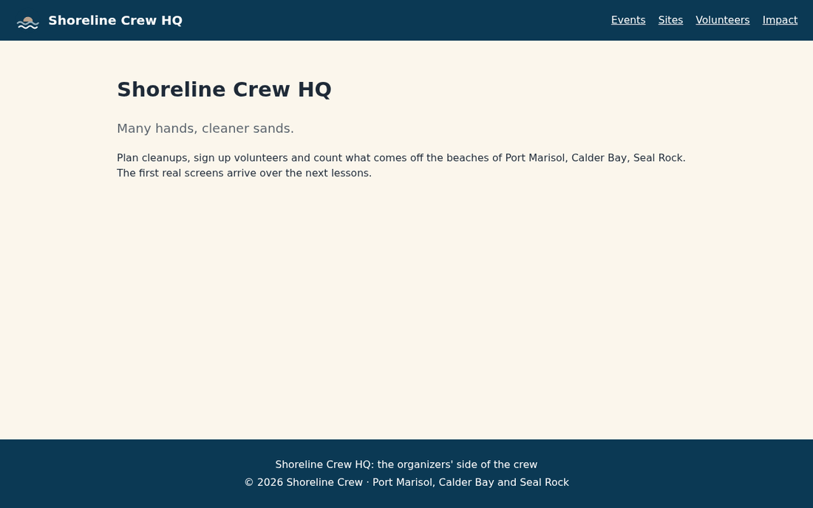

Session 4: Components and TSX
How to teach Lesson 3.1 and run Checkpoint 1: React's declarative model and how TSX becomes function calls, the TSX rules learned by breaking them, components as typed functions with named exports, pure rendering, Shoreline Crew HQ's shell (brand colors, logo and favicon, Header, HomePage, Footer, AppLayout) started and broken on purpose; then 30 minutes alone on Module 2's TypeScript with a five-row rubric.
How to Use This Guide
- Session 4 is one lesson plus Checkpoint 1. Lesson 3.1 keeps the usual rhythm: frame → live demo (you type, they follow) → guided lab (new practice, never the lesson's own project) → the lesson's project, plus 10 minutes of breaking it on purpose together. Then the first checkpoint: 30 minutes alone, 15 minutes of debrief.
- React starts today, in the real app: Lesson 3.1 gives Shoreline Crew HQ its shell (brand colors, logo and favicon, Header, HomePage, Footer, AppLayout, a skip link). Every screen of Parts 1 to 3 sits inside this frame, so every learner leaves with it working; the fallback is
lesson-07-endfrom the course downloads. - Type, do not paste (except index.css: 120 lines of CSS the lesson says to paste). Every output below comes from the lesson's own snippet in
src/Scratch.tsxof a copy of the HQ exactly as the lesson leaves it, checked withnpx tsc -bornpm run lintin a learner's terminal; where the lesson shows the same snippet, the output is the lesson's, word for word. - Keep
lesson_07.htmlopen. Lab 3.1 is the first React lab (Vitest and Testing Library: a biggernpm install); the checkpoint is a TypeScript-on-Node lab like the Module 2 labs. Both inlabs/module-04/.
The project and the checkpoint both want the second half. Start the checkpoint at 2:05 whatever happens: a project that is not finished continues at home (the lesson's checklist is clear), while a checkpoint that slips loses its point. To make that possible: index.css is pasted, not typed; the logo is copied from the page; Header and AppLayout are typed together with you. And start the checkpoint's npm install during the break, so 2:05 is writing, not downloading.
Before the Session
- ☐ Run the kit check once:
python3 labs/check_labs.py module-04from this kit's folder (9 runs, about 15 seconds: Lab 3.1's starter fails all three tests and the type check, the solution passes both, the extra run provesclassin TSX fails the test through React's warning; the checkpoint's starter fails all five tests and its model answer passes tests and check). - ☐ Projector machine: your HQ at the END of Lesson 2.4 (
lesson-06-end), so you build the shell live; both servers running; the browser at http://localhost:5173 with DevTools (Console) docked; React Developer Tools installed (Step 6 shows it);lesson_07.htmlopen. - ☐ USB stick:
lesson-07-end.zip(the finished shell) andlesson-06-end.zip(for anyone whose Lesson 2.4 is not working). - ☐ Checkpoint: print or share
checkpoint-1/TASKS.md; prepare a sticky note per learner for the rubric (five rows, 0 to 2), and decide how you collect results (each learner showsℹ fail 0or their last summary line). - ☐ Board, before learners arrive: the tide chart ("print a fresh chart from today's data; swap only what changed"); the chain
index.html (div id=root) → createRoot → render <App /> → React calls App() → elements → DOM; the component tree App → AppLayout → Header / main: HomePage / Footer.
| Symptom | Cause | Fix |
|---|---|---|
Blank page, console: does not provide an export named 'default' | App switched to a named export, main.tsx still imports the default | import { App } from './App.tsx' (TS2613's "Did you mean"). |
error TS17008: JSX element 'img' has no corresponding closing tag | HTML habit: <img …> without /> | Close it: <img … />. |
Property 'class' does not exist… Did you mean 'className'? | HTML pasted into TSX | className, htmlFor, camelCase attributes. |
⚠ react(purity): Cannot call impure function during render | new Date() (or Math.random) inside a component | Read it once at module level (Footer), or state and effects later. |
| The favicon does not change | Browsers cache favicons stubbornly | Hard reload, or open the page in a private window. |
| Two "rendered" logs for one load | Strict Mode in development | Expected; the build renders once. |
npm install for Lab 3.1 is slow | React, Vitest, jsdom and Testing Library: the biggest download so far | Start it during the demo; or pair with a neighbor whose install finished. |
Session 4 Agenda (3 hours)
| Clock | Minutes | Segment | What happens |
|---|---|---|---|
| 0:00 | 15 | Warm-up: Session 3 retrieval | Four questions on import type, guards and items[0]; every HQ logs its real cleanups (or unzips lesson-06-end). |
| 0:15 | 10 | 3.1 Frame and mental model | The tide chart: imperative versus declarative, main.tsx to the screen, TSX becomes function calls. |
| 0:25 | 25 | 3.1 Live demo | The TSX rules by breaking them (className, one parent, braces, objects), components and the capital letter, purity. |
| 0:50 | 20 | 3.1 Guided lab | labs/module-04/l3_1-components-and-tsx/starter: Tasks 1 and 2 in pairs (HTML to TSX, braces). |
| 1:10 | 10 | Break | Start npm install in checkpoint-1/starter now; both servers running for the project. |
| 1:20 | 35 | 3.1 Start the lesson project | The HQ shell, Steps 1 to 5: brand colors, logo and favicon, Header, HomePage, Footer, AppLayout, App as a named export. |
| 1:55 | 10 | 3.1 Break it on purpose | Step 6 together: class, an unclosed img, Date inside the Footer; then tsc, lint and build. |
| 2:05 | 30 | Checkpoint 1: Module 2 TypeScript | labs/module-04/checkpoint-1/starter: a tide-pool survey in three tasks (types, a generic, a guard), alone, 30 minutes. |
| 2:35 | 15 | Checkpoint debrief and Module 2 review | The model answer task by task, the rubric's five rows, what Module 3 builds on. |
| 2:50 | 10 | Wrap-up | Exit ticket (3 questions), homework, bring list for Session 5. |
| Total | 180 | Ends at 3:00. |
In the room. Lesson 3.1 estimates 145 minutes for a learner alone; the room gives it 100 (frame, demo, lab, project Steps 1 to 5 and Step 6's breaks), then 45 minutes of checkpoint and debrief. The project's Step 6 checks on every screen (keyboard, phone, dark mode, DevTools), the exercises, the quiz and the journal go home.
Goes home (about 2 to 3 hours). Finish the HQ shell (Step 6: the skip link with the keyboard, the phone size, dark mode, React DevTools; npx tsc -b, npm run lint, npm run build) and tick the checklist; Lab 3.1 Task 3 (and Tasks 1 and 2 if unfinished) and its stretch; Exercises 1 and 2 (Exercise 3 is a stretch); the Quick Quiz; the journal; any checkpoint task not finished in class (the tests say when), then reread the lesson section of the rubric row you scored lowest on.
Protect, in this order: the checkpoint's 30 minutes at 2:05; the project through Step 5 (the shell on screen); the demo's Rule 4 (objects are not ReactNode) and the capital letter. Cut first: the demo's "return on its own line" step and the purity step (the project's Step 6 shows purity again), then the lab's Task 2 in class, then the break-it block (it is in the lesson's Step 6).
Opening Segment
Warm-up: Session 3 Retrieval
15 min| 4m | Every machine: the HQ on the dev server, the browser console shows the Lesson 2.4 line (API running). Not there? Unzip lesson-06-end now (two terminals, npm ci, cp .env.example .env.local) |
| 8m | Four retrieval questions (workbook Warm-up), pairs, then the room |
| 3m | Today's map: React's first lesson, then Checkpoint 1 on Module 2 ("30 minutes, alone, not a grade") |
- What happens to an
import typeline when Node runs the file? Answer: It is removed with the other types; the imported file never runs. - What does
value is EventStatusadd to a function that returns a boolean? Answer: When it returns true, TypeScript treats the argument as an EventStatus (a type guard). - With
noUncheckedIndexedAccesson, what is the type ofevents[0]whenevents: CleanupEvent[]? Answer:CleanupEvent | undefined. - What does the browser console of your HQ show on the dev server since Lesson 2.4, with the API running? Answer:
Loaded 10 cleanups. First: Storm Debris Sweep
Lesson Plan
Components and TSX
100 min- Explain how React turns your component functions into what the browser shows, and why rendering must be pure
- Write TSX: one parent element, closed tags, className and other camelCase attributes, and {expressions} in braces
- Read the errors TypeScript reports for TSX, including attributes that do not exist and values React cannot draw
- Write components as typed functions with named exports, one per file, and compose them into a tree
- Import an image into a component and explain how TypeScript knows its type
- Give Shoreline Crew HQ its shell: AppLayout, Header, Footer, a HomePage, the brand colors and the favicon
| 10m | Frame: the tide chart; main.tsx to the screen; TSX becomes function calls |
| 25m | Live demo: the TSX rules by breaking them, components, the capital letter, purity |
| 20m | Guided lab: l3_1-components-and-tsx/starter, Tasks 1 and 2 in pairs |
| 35m | Start the lesson project: the HQ shell, Steps 1 to 5 |
| 10m | Break it on purpose: Step 6's three breaks, then tsc, lint and build |
"Think of a list of cleanups in plain JavaScript: find the element, create rows, set their text, and when a cleanup fills up, find the right row again and change it. That is imperative: step-by-step instructions. React is declarative: you write a function that says what the page should look like for the data you have now."
Then the picture: "The crew does not repaint the harbor's tide board by scraping off yesterday's numbers. Each morning they print a fresh chart and pin it up. Your components are the printer: given today's data, a fresh description. React is the person at the board who notices that only two numbers changed and swaps just those." Walk the chain on the board, createRoot → render(<App />) → React calls App() → elements (plain objects) → the DOM, and say: the screen is a function of the data.
In src/Scratch.tsx of the HQ (the lesson's experiment file), npx tsc -b after each paste. Outputs from a copy of the HQ as Lesson 3.1 leaves it; every one equals the lesson's card.
- TSX becomes function calls (3m). The lesson's tiny component, and what TypeScript writes for it (the lesson's own listing):
const crewName = 'Shoreline Crew' export function Greeting() { return <h1 className="title">{crewName} HQ</h1> }
"Tags are values; attributes are object properties. That explains most of the rules." Noimport Reactanywhere: thejsx: "react-jsx"setting adds the import.import { jsxs as _jsxs } from "react/jsx-runtime"; const crewName = 'Shoreline Crew'; export function Greeting() { return _jsxs("h1", { className: "title", children: [crewName, " HQ"] }); }
- Rule 1: JavaScript's names (4m). Create
src/Scratch.tsx(today's experiment file) and paste the lesson's sign-in field with HTML habits:export function SignInField() { return ( <div class="field"> <label for="email">Email</label> <input id="email" type="email" maxlength="80" /> </div> ) }
src/Scratch.tsx:3:10 - error TS2322: Type '{ class: string; children: Element[]; }' is not assignable to type 'DetailedHTMLProps<HTMLAttributes<HTMLDivElement>, HTMLDivElement>'. src/Scratch.tsx:4:14 - error TS2322: Type '{ for: string; children: string; }' is not assignable to type 'DetailedHTMLProps<LabelHTMLAttributes<HTMLLabelElement>, HTMLLabelElement>'. src/Scratch.tsx:5:38 - error TS2322: Type '{ id: string; type: "email"; maxlength: string; }' is not assignable to type 'DetailedHTMLProps<InputHTMLAttributes<HTMLInputElement>, HTMLInputElement>'. Found 3 errors in the same file, starting at: src/Scratch.tsx:3Three errors, each ending with its fix (read the first from the bottom up). TypeScript knows every attribute of every HTML element. Exceptions that keep their dashes:aria-*,data-*. - Rule 2: one parent (3m).
export function SiteHeading() { return ( <h2>Pelican Point Beach</h2> <p>Port Marisol</p> ) }
src/Scratch.tsx:3:5 - error TS2657: JSX expressions must have one parent element. Found 1 error in src/Scratch.tsx:3
A function returns one value. Wrap in a fragment<>…</>when a<div>would add nothing: the check goes silent. Rule 3 (close every tag) comes back in the project as TS17008. - Rule 4: braces hold expressions (4m). The lesson's summary card checks clean; then change one line to
<p>{site}</p>:src/Scratch.tsx:11:10 - error TS2322: Type '{ name: string; town: string; }' is not assignable to type 'ReactNode'. Found 1 error in src/Scratch.tsx:11ReactNode = anything React can draw: text, numbers, elements, true/false/null/undefined (draw nothing: Lesson 3.3), arrays of these. Never a plain object. Without TypeScript: a blank page and "Objects are not valid as a React child". - Components and their types (4m).
SiteNameused insideSiteLine: no annotation, everything typed (hover:JSX.Element). Give it a prop it does not declare:src/Scratch.tsx:8:17 - error TS2322: Type '{ town: string; }' is not assignable to type 'IntrinsicAttributes'. Found 1 error in src/Scratch.tsx:8Props are Lesson 3.2. Then lowercase the name in both places: - The capital letter (2m).
src/Scratch.tsx:1:10 - error TS6133: 'siteName' is declared but its value is never read. src/Scratch.tsx:8:7 - error TS2339: Property 'siteName' does not exist on type 'JSX.IntrinsicElements'. Found 2 errors in the same file, starting at: src/Scratch.tsx:1
<siteName />is read as an HTML tag: it is not inJSX.IntrinsicElements, so the function is never used (TS6133). Components are PascalCase, one per file, named exports, function declarations. - Rendering must be pure (4m). tsc has no complaint about
new Date()in a component; the linter does:export function Greeting() { const hour = new Date().getHours() return <h2>{hour < 12 ? 'Good morning, crew' : 'Hello, crew'}</h2> }
⚠ react(purity): Cannot call impure function during render ╭─[src/Scratch.tsx:2:16] 1 │ export function Greeting() { 2 │ const hour = new Date().getHours() · ─────┬──── · ╰── Cannot call impure function 3 │ return <h2>{hour < 12 ? 'Good morning, crew' : 'Hello, crew'}</h2> ╰──── help: `Date` is an impure function. Calling an impure function can produce unstable results that update unpredictably when the component re-renders note: React Compiler skipped optimizing this component or hook. Additional guidance: https://react.dev/reference/eslint-plugin-react-hooks/lints/purity Found 1 warning and 0 errors. Finished in …ms on 11 files with 116 rules using … threads.Same inputs, same TSX. Strict Mode double-renders in development to expose impure components (the console shows two "HomePage rendered" lines). Today's Footer reads the year once, at the top of its file. - return on its own line (1m). The common mistake:
returnalone on a line returns nothing.src/Scratch.tsx:9:8 - error TS2786: 'SiteName' cannot be used as a JSX component. Found 1 error in src/Scratch.tsx:9
Habit:return (on the same line. Deletesrc/Scratch.tsxbefore the project.
- HTML habits in TSX (
class,for, unclosed<img>,<!-- -->). Coach: "Read the last line of the message: it names the fix." (Lab 3.1 Task 1; Exercise 1.) - Mixing default and named imports. Coach: "Does the file say
export defaultorexport function? The import must match." (Self-check Q1, the project's Step 5.) - Expecting the dev server to check types. A page that shows something is not a page without errors. Coach: "What does
npx tsc -bsay?" Make it the last command of every step.
Folder: labs/module-04/l3_1-components-and-tsx/starter/ (task sheet labs/module-04/l3_1-components-and-tsx/TASKS.md); your reference is labs/module-04/l3_1-components-and-tsx/solution/. The course's first React lab, outside the app: a beach-day page from four components. Task 1 turns the crew's old HTML handout into TSX (the test fails while React prints ANY warning, so class that "works" still fails), Task 2 puts values in braces (one line hands React an object), Task 3 composes the page (a default-import mix-up and a lowercase component). npm install once in starter/ (start it during the demo).
- Run it as shipped (2m):
npm testfails all three;npm run typecheck:
src/BeachDayPage.tsx:2:8 - error TS2613: Module '"…/l3_1-components-and-tsx/starter/src/PageHeader"' has no default export. Did you mean to use 'import { PageHeader } from "…/l3_1-components-and-tsx/starter/src/PageHeader"' instead?
src/BeachDayPage.tsx:6:10 - error TS6133: 'pageFooter' is declared but its value is never read.
src/BeachDayPage.tsx:22:7 - error TS2339: Property 'pageFooter' does not exist on type 'JSX.IntrinsicElements'.
src/CrewNumbers.tsx:15:19 - error TS2322: Type '{ beach: string; town: string; }' is not assignable to type 'ReactNode'.
Found 4 errors in 2 files.- Task 1 in pairs (8m):
className,htmlFor,tabIndex={0},<img … />,<input … />,{/* */}. Circulate fortabIndex="0"(a string works but the course writes numbers in braces) and for a forgotten comment. Whatclasscosts, from the kit's extra run:
+ "Invalid DOM property `for`. Did you mean `htmlFor`?", + "Invalid DOM property `class`. Did you mean `className`?", Test Files 1 failed (1) Tests 1 failed | 2 passed (3)
- Task 2 (7m):
{crew.home.beach}, {crew.home.town}, the two lines fromcrew, and a ternary. Ask: "Why does the test sayObjects are not valid as a React childwhile tsc saysnot assignable to type 'ReactNode'?" (one runs, one checks). - Debrief (3m): the solution's run ends:
✓ src/lab.test.tsx (3 tests)
✓ Task 1: the tide-pool rules, as TSX, without a React warning
✓ Task 2: the crew in numbers, every value through braces
✓ Task 3: the page has a header, a main area and a footer
Test Files 1 passed (1)
Tests 3 passed (3)- Fast finishers: Task 3 and the stretch (the year, read once at module level).
The lesson project is The HQ Shell, six steps in shoreline-hq with both servers running. In the room, Steps 1 to 5 (35 minutes):
- Step 1 (5m): paste the lesson's
src/index.css(brand custom properties, a dark-mode block, the shell's classes); point at--deep-tideand the@media (prefers-color-scheme: dark)block. - Step 2 (4m):
mkdir src/assets, the logo from the page intosrc/assets/logo.svg, and the same file aspublic/favicon.svg. - Steps 3 and 4 (14m): Header (type it together:
alt="",aria-label="Main", four placeholder links), HomePage (the heading moves out of App, a fragment,{' '}), Footer (the year read once, outside the component). - Step 5 (12m): AppLayout with the skip link and one
<main id="main">; App becomes a named export; the page goes blank;npx tsc -bnames the fix:
src/main.tsx:4:8 - error TS2613: Module '"/Users/you/shoreline/shoreline-hq/src/App"' has no default export. Did you mean to use 'import { App } from "/Users/you/shoreline/shoreline-hq/src/App"' instead?
Found 1 error in src/main.tsx:4import { HomePage } from '../pages/HomePage.tsx' import { Footer } from './Footer.tsx' import { Header } from './Header.tsx' export function AppLayout() { return ( <> <a className="skip-link" href="#main"> Skip to main content </a> <Header /> <main id="main" className="page"> <HomePage /> </main> <Footer /> </> ) }
Done in the room = the shell on :5173 (below). Then the 10-minute break-it block.

One change at a time, run, read, undo (Ctrl+Z). In Header.tsx, class="site-header":
src/components/Header.tsx:5:13 - error TS2322: Type '{ class: string; children: Element[]; }' is not assignable to type 'DetailedHTMLProps<HTMLAttributes<HTMLElement>, HTMLElement>'.
Found 1 error in src/components/Header.tsx:5Then the / removed from <img … />:
src/components/Header.tsx:7:10 - error TS17008: JSX element 'img' has no corresponding closing tag. Found 1 error in src/components/Header.tsx:7
Then const year = … moved inside Footer and npm run lint:
⚠ react(purity): Cannot call impure function during render
╭─[src/components/Footer.tsx:2:16]
1 │ export function Footer() {
2 │ const year = new Date().getFullYear()
· ─────┬────
· ╰── Cannot call impure function
3 │
╰────
help: `Date` is an impure function. Calling an impure function can produce unstable results that update unpredictably when the component re-renders
note: React Compiler skipped optimizing this component or hook. Additional guidance: https://react.dev/reference/eslint-plugin-react-hooks/lints/purity
Found 1 warning and 0 errors.
Finished in …ms on 10 files with 116 rules using … threads.Undo all three; npx tsc -b is silent, lint says Found 0 warnings and 0 errors., and the build ends (22 modules: the four components and the logo were added):
vite v8.3.8 building client environment for production... ✓ 22 modules transformed. computing gzip size... dist/index.html 0.46 kB │ gzip: 0.30 kB dist/assets/index-Yb3Ln9bF.css 1.46 kB │ gzip: 0.67 kB dist/assets/index-DDPdfoJp.js 223.13 kB │ gzip: 69.97 kB ✓ built in …ms

Ask these out loud during the demo, the lab and the project:
- What does
<h1 className="title">{crewName} HQ</h1>become? Answer: a call to React's jsx function that returns a plain object describing the h1. - What can React draw? Answer: text, numbers, elements and arrays of these; true, false, null and undefined draw nothing; never a plain object.
- Why must component names start with a capital letter? Answer: lowercase tags are HTML elements; capitalized ones are your components.
- Why is the Footer's year read outside the component? Answer: rendering must be pure: same inputs, same TSX.
Workbook self-check, items Q1 to Q6.
Answers: Q1 B) Change the import to import { App } from './App.tsx'; Q2 C) <StrictMode> calls each component twice in development to expose impure ones; the build does not; Q3 TS2657: JSX expressions must have one parent element (a function returns one value); wrap the two in a fragment, <>…</>; Q4 D) {leader.name}: the property you want to show; Q5 A) string, from Vite's declare module '*.svg' (loaded by "types": ["vite/client"]); Q6 D) alt="", so screen readers skip a decorative picture. Full set with explanations in the Answer Key.
Support: learners behind at the end of the project unzip lesson-07-end at home and compare it file by file with theirs; in the room, they finish Step 5 with a neighbor before the checkpoint starts. For TSX rules, a card with four lines: className/htmlFor · one parent · close every tag · braces hold expressions.
Stretch: Lab 3.1 Task 3 and the stretch; the lesson's Exercise 3 (split the Header into BrandLink and MainNav) and the Bonus Challenge.
Checkpoint 1: Module 2 TypeScript
45 min| 3m | Set-up: everyone in checkpoint-1/starter with npm install done (started at the break), TASKS.md open; the rules |
| 27m | Work alone: Task 1 (Lessons 2.1 and 2.2), Task 2 (2.3), Task 3 (2.4); npm test and npm run check say when each is done |
| 15m | Debrief: the model answer task by task, the rubric rows, what Module 3 builds on |
- What:
labs/module-04/checkpoint-1/TASKS.md: a tide-pool survey (a volunteer counts one kind of animal in one zone). Task 1ZoneandSurvey(a union, an optional note,verifiedBy: string | null) andsurveyLine. Task 2 aSurveyFormatterfunction type,formatAllwith a default, a genericmaxBy<T>. Task 3 a type guardisSurvey,readSurveys(JSON as unknown, throws on bad data),SurveyEditwith utility types. - Rules: alone; lesson pages and their own ts-lab allowed ("that is how developers work"); no neighbor's code. Formative: nothing is graded for the course certificate; it tells each learner what to revisit.
- Verified: five node:test tests fail on the starter and pass on the model answer, and six
@ts-expect-errorlines makenpm run checkfail until the types are precise (a reef is not a zone;verifiedBycannot be left out;maxBymay find nothing; a formatter returns text; an edit never changes the id) (check_labs.py). - While they work: circulate with the rubric; note one row per learner you see clearly (Process is the easiest: who runs both commands after each change?). At 27 minutes, everyone runs
npm testonce more and writes theℹ pass/ℹ faillines on the workbook's checkpoint page. - Collect the papers at the end of the checkpoint: each learner tears out (or photographs and sends) the workbook's checkpoint page with their summary line; you add the rubric scores (five rows, 0 to 2) after class and hand the papers back in Session 5's warm-up.
| Criterion | Meets (2) | Partly (1) | Not yet (0) |
|---|---|---|---|
| Types and unions (Task 1) | Zone is a union of the three words; Survey has the optional note and verifiedBy: string | null; the Task 1 @ts-expect-error lines are accepted | Types written, but one is too loose (zone: string, note: string | undefined required, verifiedBy?:) | Types missing, any, or copied from a neighbor |
| Null and narrowing (Tasks 1 and 3) | surveyLine handles the missing note and the null verifiedBy with if, ?? or ?.; no !; the guard narrows the zone with an equality check | Works, but with !, || or an as | Crashes on the null or the missing note, or never narrows |
| Functions and generics (Task 2) | SurveyFormatter is a function type; formatAll has the default; maxBy<T> takes (item: T) => number and returns T | undefined | Works for surveys only, or returns T (the honest-undefined line fails) | any parameters or no types |
| Outside data (Task 3) | JSON.parse result typed unknown; isSurvey is a type predicate checking every property; readSurveys throws on bad data; SurveyEdit = Partial<Omit<Survey, 'id'>> | The guard checks only some properties, or SurveyEdit written by hand | as Survey[] instead of a check, or no guard |
| Process | Runs npm test and npm run check after each change, reads the first error top to bottom, can explain one decision | Runs only the tests, or reads only the last line of an error | Does not run the checks; guesses |
Reading the results: 8 to 10 = ready for Module 3. 5 to 7 = name the weakest row to the learner and point at its lesson's exercises. 4 or less = a one-to-one conversation before Session 5: Module 3 types every component's props with Module 2's tools.
- Task 1 (4m): the model answer's
Survey; ask who wroteverifiedBy?:and what the type test said (Q8). ShowsurveyLinewith two small ifs. - Task 2 (5m):
maxBy<T>: hover a call with surveys and one with words: T is read from the argument. WhyT | undefined? (an empty list). - Task 3 (4m):
isSurvey:isRecord, then one check per property;zones.some(...)for the union; the null-or-string check forverifiedBy. ThenPartial<Omit<Survey, 'id'>>. - Close (2m): "Session 5 types every component's props with exactly these tools: interfaces, optional properties, unions, function types for callbacks."
Workbook self-check, items Q7 to Q12 (Module 2 review, the checkpoint's skills):
Answers: Q7 A) string[]; Q8 C) One without a note and without verifiedBy; Q9 function maxBy<T>(items: T[], valueOf: (item: T) => number): T | undefined; Q10 B) A boolean return type does not tell TypeScript what true means; it needs value is Survey; Q11 D) Partial<Omit<Survey, 'id'>>; Q12 B) const data: unknown = JSON.parse(json). Full set with explanations in the Answer Key.
Closing
Sort the answers before Session 5: question 3 tells you who needs the components-and-props bridge at the start of Lesson 3.2.
- In one sentence: what happens between
render(<App />)and the page you see? Answer: React calls the component functions, gets back elements (plain objects describing the page) and creates or changes the real DOM to match. - Name two TSX rules that HTML does not have. Answer: any two of:
className/htmlForand camelCase attributes; one parent element (or a fragment); every tag closed; braces for expressions; comments in braces. - Why are the HQ's components named exports with capitalized names, one per file? Answer: a named import must use the real name (no default/named mix-ups, editor renames work); lowercase tags are HTML elements; one file per component keeps each piece findable.
- Finish the HQ shell (Step 6: keyboard and the skip link, phone size, dark mode, React DevTools; then
npx tsc -b,npm run lint,npm run build), and tick the Project Completion Checklist; deletesrc/Scratch.tsx. - Lesson exercises: Exercises 1 and 2 (from HTML to TSX; read the errors and fix the component). Exercise 3 (split the Header) is a stretch.
- The Quick Quiz on the lesson page (answers in the Answer Key).
- Lab 3.1: Task 3 (and the rest); the stretch.
- Checkpoint 1: any task whose tests still fail, until
ℹ fail 0and a silent check; then reread the lesson section of your lowest rubric row. - Journal: the lesson's prompt (render to the page, in five sentences; one TSX error that told you the fix, one that needed a second read).
- The HQ shell working (
lesson-07-endif not): Header, HomePage, Footer and AppLayout as named exports,npm run buildpassing. - Session 5 (Lesson 3.2) types props with interfaces and gives AppLayout a
childrenslot, then a Sites page from typedSite[]data with pictures from the API: the API running. - The checkpoint's rubric sticky note and the workbook.
If You Run Long or Short
- Protect: the checkpoint at 2:05 (30 minutes) and at least 10 minutes of debrief; the project through Step 5.
- Cut first (saves 5m): the demo's purity and return-on-its-own-line steps (the break-it block shows purity again).
- Cut second (saves 10m): the break-it block: learners do Step 6 at home.
- Cut third (saves 7m): Lab 3.1 Task 2 in class.
- Step 6's checks on the projector: Tab once for the skip link, the device toolbar at 390 px, dark mode through the Rendering panel, React DevTools' Components tab.
- Exercise 2 together: read three errors, fix the component, one at a time.
- The FAQ's component in a
.tsfile: TS1005/TS1161, and why the HQ's component files end in.tsx.